Como tudo se liga
Que parte do Atalaia fala com que parte, por que ligação, e o que passa por ela. Debaixo de cada diagrama: o que circula e o que não circula.
O Atalaia está em pré-alfa. Em placas reais, numa bancada, já correram: arranque, rádio, botões, adoção e uma atualização por rádio. O resto está feito e testado só em software.
Para ler o primeiro diagrama: uma linha contínua funciona sem internet no campo, uma linha tracejada precisa de internet.
1 · O sistema completo

O que circula
O tráfego do jogo fica no campo. As caixas e o controlador falam por LoRa através do modem USB. A consola do GM, a app de quem joga, os props Android e os ficheiros que uma caixa vai buscar usam o Wi-Fi do próprio campo.
O que não circula
- Nada num jogo espera pela internet. O servidor do site é opcional.
- As posições de quem joga nunca vão por LoRa nem por MQTT.
- O servidor do site nunca se liga ao controlador: é sempre o controlador que abre a ligação.
- As caixas nunca falam com a internet. O controlador vai buscar os modos e uma pessoa carrega o firmware.
2 · As camadas de rádio

O que circula
Cada pacote é cifrado e verificado com AES-128-CCM, com a chave do jogo. O modem sela e abre os pacotes, por isso o controlador e o modem falam em tramas simples pelo cabo. As caixas repetem os pacotes umas das outras.
O que não circula
- Nenhuma posição, nome, token, palavra-passe de Wi-Fi, imagem de firmware ou pacote de modo vai por LoRa.
- Os ficheiros grandes vão buscar-se por HTTPS. Só uma oferta curta ou um relatório de falha usa o LoRa.
3 · Um jogo, do convite ao fim


O que circula
Uma caixa livre anuncia-se e o GM convida-a. A carga de entrada (id e chave do jogo, papel, equipas, canal) chega selada. O jogo só começa quando cada papel tem uma caixa. Depois as caixas enviam eventos e um STATE de 15 em 15 s.
O que não circula
- A consola do GM nunca fala LoRa: só fala com o controlador.
- A chave do jogo só viaja dentro do convite selado (ou num cartão), nunca num anúncio.
4 · Quem joga, no dia do jogo


O que circula
Quem joga lê o cartaz, fixa a CA do campo, regista a presença e recebe um token. A app passa a seguir a transmissão em direto. Um marshal assina as leituras do cronógrafo no seu próprio telemóvel.
O que não circula
- As posições nunca vão por LoRa nem por MQTT, e nunca chegam a quem tem outro papel.
- Não é preciso internet: tudo isto funciona com o servidor do site desligado.
5 · Controlador e servidor do site


O que circula
O controlador envia jogos, eventos, pontos, nós e registos do cronógrafo de 30 em 30 s durante um jogo e de 5 em 5 min entre jogos. Vai buscar agendas, inscritos e definições. Um fluxo leva a vista em direto e os comandos do GM remoto, que o controlador volta a verificar.
O que não circula
- O servidor do site nunca se liga ao controlador e nunca tem a chave do jogo, a chave de entrada nem tokens.
- Estar sem ligação é normal: os eventos esperam e seguem depois, por ordem.
- As posições só saem do controlador em dois casos opcionais (GM remoto, retransmissão ATAK remota), em memória.
6 · Pôr coisas numa caixa

O que circula
As chaves de lançamento e de modos assinam os ficheiros, e as suas metades públicas estão incorporadas na caixa. Uma pessoa descarrega o firmware assinado e carrega-o no controlador. O controlador oferece a atualização por LoRa e a caixa vai buscá-la pelo Wi-Fi do campo. Uma caixa é adotada por cabo USB, cartão NFC ou código de emparelhamento.
O que não circula
- É a assinatura, e não o canal, que torna um ficheiro seguro: a caixa decide, com as chaves do seu próprio firmware, antes de escrever um byte.
- O controlador nunca descarrega firmware do GitHub.
- As chaves de lançamento e as chaves de modos são chaves separadas.
7 · Início de sessão e contas no servidor do site

O que circula
Um token de acesso de curta duração e um token de renovação que é substituído a cada uso. As funções da equipa só valem numa sessão com segundo fator (TOTP ou chave de acesso). Um início de sessão social, sozinho, não é segundo fator.
O que não circula
- O controlador não usa estas contas: usa a chave de API do campo.
- Um fornecedor social só é contactado pelo navegador da pessoa e pelo servidor do site, nunca por um controlador, uma caixa ou um modem.